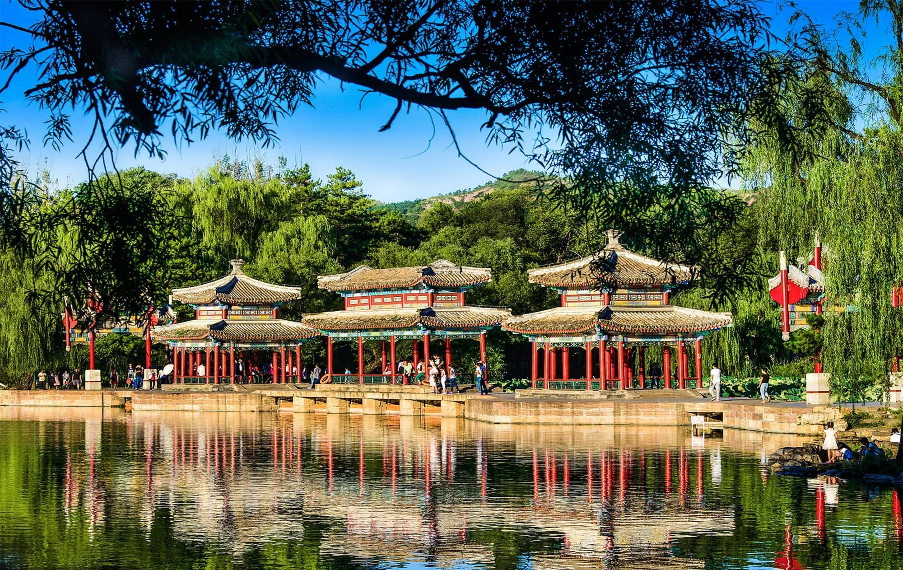

承德避暑山庄

承德避暑山庄，又名“承德离宫”或“热河行宫”，位于河北省承德市双桥区山庄东路6号。 [13-14] 承德避暑山庄清康熙四十二年（1703年）开始大规模修建， [16] 是中国清朝皇帝为了实现安抚、团结中国边疆少数民族，巩固国家统一的政治目的而修建的一座夏宫。 [11]
承德避暑山庄占地564万平方米， [14] 主要分为宫殿区和苑景区（湖泊区、平原区和山峦区）两部分。承德避暑山庄不同于其它的皇家园林，它继承和发展了中国古典园林“以人为之美入自然，符合自然而又超越自然”的传统造园思想，按照地形地貌特征进行选址和总体设计，完全借助于自然地势，因山就水，顺其自然。它集中国古代造园艺术和建筑艺术之大成，是具有创造力的杰作。 [11]
1994年12月，承德避暑山庄及其周围寺庙被联合国教科文组织列为世界文化遗产。 [10] [16] 2007年，承德避暑山庄被评为国家AAAAA级景区。 [13]